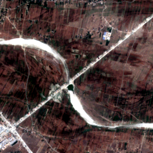
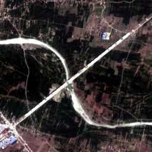

medium alert · real
Segment BSRDC-KDB-BRIDGE-S0010
Field verification · Download PDF Report
Responsible-use notice: This alert requests field verification. It is not an allegation or an automated enforcement decision.
Multi-Temporal Satellite Image Chips (Tile 43PGR)
Genuine 10-metre Sentinel observation chips verifying ground-truth progression vs stall.

1. Baseline (2023-02-15)
Pre-construction natural scrubland. No alignment visible.

2. Active Earthworks (2024-02-18)
Vegetation cleared; stripped bare soil & cut/fill formation.

3. Alerted Stall (2024-07-28)
Work halted; surface smoothing, weed regrowth, SAR flatline.
Why it fired
State: stall_candidate · Risk score: 0.722 · Confidence: 1.00
- activity remained below 35 for 3 consecutive clear observations
Activity components
| Signal | Raw | Normalized | Score points |
|---|---|---|---|
| vegetation_clearance | 0.074 | 0.295 | 4.43 |
| bare_soil_activity | -0.021 | 0.000 | 0.00 |
| built_up_activity | 0.019 | 0.096 | 1.93 |
| brightness_activity | -0.021 | 0.142 | 1.42 |
| vv_activity | -2.880 | 0.960 | 9.60 |
| vh_activity | -3.403 | 1.000 | 10.00 |
| linear_continuity | 0.150 | 0.150 | 2.25 |
Context
Rainfall: 9.7 mm · Observability: high
Optical scenes: S2B_45RUJ_20240307_0_L2A
SAR scenes: S1A_IW_GRDH_1SDV_20240331T001225_20240331T001250_053218_0672F8_rtc
Evidence completeness
Status: complete
- None
Integrity
Evidence SHA-256
37a04279450338d6d437e2a9bb581b0edf23c7660b6297c11793740023416876